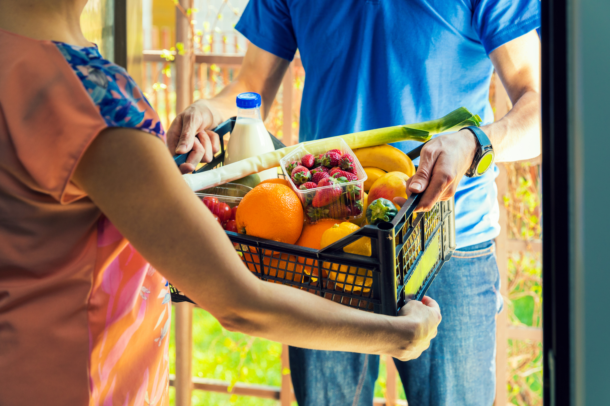

Choose a grocery delivery service: There are several options available, such as Instacart, Amazon Fresh, Walmart Grocery Delivery, and local grocery stores that offer delivery services. You can visit their websites or download their mobile apps to get started. Create an account: Sign up for an account with the grocery delivery service of your choice. You may need to provide some personal information, including your address and payment details. Browse and select items: Once you're logged in, you can start browsing the available products. These services usually have a wide range of groceries, including fresh produce, pantry staples, dairy products, and more. Add the items you want to your virtual shopping cart. Customize your order: Some services allow you to add special instructions or preferences for certain items. For example, you can request ripe bananas or specify any dietary restrictions or allergies. Choose a delivery time: Select a convenient delivery window for your groceries. Many services offer same-day or next-day delivery options, but availability may vary depending on your location and the service you choose. Review and place your order: Double-check your order to ensure everything is accurate and complete. Review the total cost, including any applicable delivery fees, taxes, or service charges. Once you're satisfied, proceed to checkout and place your order. Track your delivery: After placing your order, you may receive updates on the status of your delivery. Some services provide real-time tracking, allowing you to see the progress of your delivery and receive notifications when it's on its way. Receive your groceries: A delivery driver will bring your groceries to your designated address within the chosen delivery window. Make sure someone is available to receive the order or provide specific instructions for the driver to follow. Check your order and provide feedback: Once you receive your groceries, check the items to ensure they are correct and in good condition. If you have any issues or concerns, contact the grocery delivery service's customer support. You may also have the option to rate and provide feedback on your delivery experience. It's important to note that the availability and specifics of grocery delivery services may vary depending on your location and the service provider. Be sure to check the details and options available in your area.
